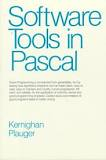

I think Kernighan and Plauger nailed it on the cover of their seminal book Software Tools in Pascal*:

The fine print in the image says:
Good programming is not learned from generalities, but by seeing how significant programs can be made clean, easy to read, easy to maintain and modify, human-engineered, efficient, and reliable, by the application of common sense and good programming practices. Careful study and imitation of good programs leads to better writing.
This has certainly been true for me, and most of the students I have taught. Accordingly this course is designed around modelling and practice. I model for you how to write programs either by describing it on web pages or, when something is better shown than told, showing you in video screencasts. In many modules additional example programs are provided for you to study. Finally, the assignments (with the exception of the first introductory module) all aim to get you writing code in a careful sequence that will take you in stages from writing simplistic programs to writing subtle and powerful ones.
* Kernighan, Brian W. and P. J. Plauger Software Tools in Pascal, Reading, Massachusetts: Addison-Wesley, 1981.